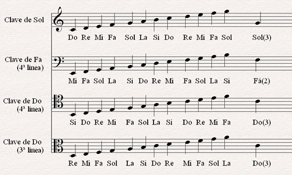

¿Qué es la notación musical?
La notación musical es un sistema de escritura que se utiliza para representar las notas y otros elementos musicales en una partitura. Es un lenguaje universal que permite a los músicos comunicarse a través del tiempo y el espacio, ya que permite que la música escrita en un lugar y momento determinado pueda ser interpretada por músicos en otros lugares y momentos.
Existen numerosos símbolos de notación musical, pero nos centraremos en los principales, los cuales son esenciales para comprender cómo leer partituras. Comencemos por el pentagrama, que consiste en un conjunto de cinco líneas horizontales con cuatro espacios entre ellas, que se numeran de abajo hacia arriba:
No obstante, también es necesario en muchas ocasiones añadir líneas y espacios adicionales tanto arriba como abajo del pentagrama. Para ello se emplean pequeñas líneas de esta manera:
El siguiente símbolo: Las claves, estás asignan un nombre y una altura a las notas escritas en el pentagrama. Las claves más comunes son la de Sol y Fa debido a su adaptabilidad a diferentes tesituras.
pentagrama en clave de Sol.
pentagrama en clave de Fa.
Ahora siguen: Las notas musicales, son los símbolos que representan los sonidos en la música. Hay siete notas principales: Do, Re, Mi, Fa, Sol, La, Si. Se representan en el pentagrama por su altura y duración. Son la base de la escritura y la interpretación de la música.